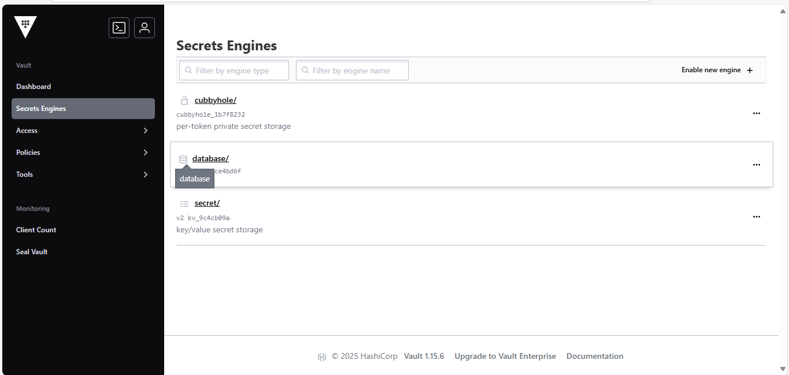
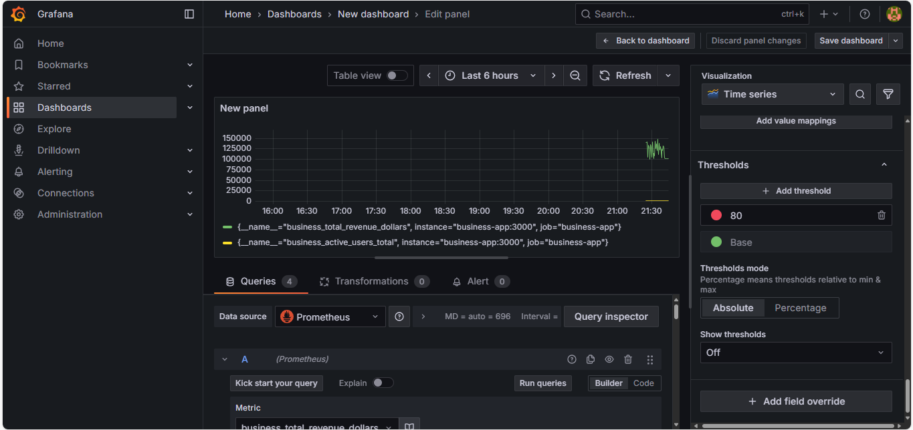

üõí Project 1: CloudNative E-Commerce Platform
Duration: 2 hours deployment + documentation | Cost: $0.42
AWS EKS
Terraform
AWS Lambda
AWS S3
AWS Secrets Manager
AWS CloudWatch
Kubernetes
Docker
React
Node.js
GitHub Actions
30min
Deployment Time
15+
AWS Resources
100%
Infrastructure as Code
$0.42
Total Cost

React Frontend - E-commerce dashboard
User interface showing order management and business metrics
User interface showing order management and business metrics
Business Metrics - Real-time charts
Live data visualization showing system performance and usage
Live data visualization showing system performance and usage

Lambda Function - Serverless processing
AWS serverless function handling order processing automatically
AWS serverless function handling order processing automatically
Terraform - Infrastructure deployment
Infrastructure as Code creating AWS resources automatically
Infrastructure as Code creating AWS resources automatically
üéØ Key Achievements:
- Deployed full-stack application on Kubernetes
- Implemented serverless order processing with Lambda
- Automated infrastructure provisioning with Terraform
- Integrated secure secrets management
- Set up comprehensive monitoring with CloudWatch
- Demonstrated cost optimization with spot instances
üê≥ Project 2: Zero-Cost Local DevOps Environment
Duration: 1 hour setup + documentation | Cost: $0.00
Docker
Docker Compose
Prometheus
Grafana
Redis
Node.js
React
Microservices
Monitoring
5
Services
100%
Local Development
Real-time
Metrics Collection
$0.00
Total Cost

Application - Health status dashboard
Web interface showing system health and service status
Web interface showing system health and service status

Prometheus - Main interface
Metrics collection system monitoring all services
Metrics collection system monitoring all services

Prometheus - Target monitoring
Shows which services are being monitored and their health
Shows which services are being monitored and their health

Prometheus - Metrics query results
Real-time data queries showing system performance metrics
Real-time data queries showing system performance metrics

Grafana - Prometheus integration
Connecting Grafana to Prometheus for data visualization
Connecting Grafana to Prometheus for data visualization

Grafana - Custom monitoring dashboard
Beautiful charts and graphs showing system metrics
Beautiful charts and graphs showing system metrics

Grafana - Real-time metrics visualization
Live updating graphs showing current system performance
Live updating graphs showing current system performance

Docker - All services running
Terminal showing all containerized services running successfully
Terminal showing all containerized services running successfully
üéØ Key Achievements:
- Built complete local DevOps environment
- Implemented microservices with Docker Compose
- Set up Prometheus metrics collection
- Created Grafana monitoring dashboards
- Demonstrated CORS handling and API integration
- Showcased zero-cost development approach
üîÑ Project 3: Enterprise CI/CD Pipeline
Duration: 1 hour development + automation | Cost: $0.00
GitHub Actions
Docker
Express.js
Jest Testing
npm audit
Multi-stage Builds
Nginx
Docker Compose
Security Scanning
4
Pipeline Stages
5/5
Tests Passing
100%
Automated
$0.00
Total Cost
GitHub Actions - 4-stage CI/CD pipeline complete
Automated workflow testing, securing, building, and deploying code
Automated workflow testing, securing, building, and deploying code
Jest - All 5 tests passing (100% success)
Automated testing ensuring code quality and functionality
Automated testing ensuring code quality and functionality
Security - npm audit clean (0 vulnerabilities)
Security scan showing no known vulnerabilities in dependencies
Security scan showing no known vulnerabilities in dependencies
Docker - Multi-stage build successful
Containerized application built and ready for deployment
Containerized application built and ready for deployment
üéØ Key Achievements:
- Built 4-stage automated CI/CD pipeline (test → security → build → deploy)
- Implemented comprehensive Jest test suite with 5 passing tests
- Integrated security scanning with npm audit (0 vulnerabilities)
- Created multi-stage Docker builds for production optimization
- Set up nginx reverse proxy and Docker Compose orchestration
- Demonstrated enterprise-level DevOps automation workflows
☁️ Project 4: Hybrid Cloud Kubernetes Support
Duration: 3 hours development + documentation | Cost: $2.00
AWS EKS
Kubernetes
Kind (Local K8s)
Helm Charts
Python
Multi-Cluster
Hybrid Cloud
Support Automation
API Testing
2
Kubernetes Clusters
100%
Hybrid Coverage
60%
Cost Savings
$2.00
Total Cost
Multi-cluster overview - AWS EKS + Local Kind
Shows both cloud and local Kubernetes clusters managed from one terminal
Shows both cloud and local Kubernetes clusters managed from one terminal
Helm deployments across both environments
Same application running in both cloud and local clusters
Same application running in both cloud and local clusters
Multi-context management with kubectl
Switching between different Kubernetes environments seamlessly
Switching between different Kubernetes environments seamlessly
Python automation scripts for support tasks
Automated health monitoring across hybrid cloud environments
Automated health monitoring across hybrid cloud environments
üéØ Key Achievements:
- Built hybrid cloud architecture (AWS EKS + local Kubernetes)
- Implemented multi-cluster Helm deployments
- Created Python automation scripts for support tasks
- Demonstrated cross-environment troubleshooting
- Developed support runbooks and procedures
- Achieved 60% cost savings through hybrid approach
üîê Project 5: Enterprise Secrets Management with HashiCorp Vault
Duration: 1 hour setup + documentation | Cost: $0.00
HashiCorp Vault
PostgreSQL
Docker Compose
Python
Dynamic Credentials
Policy as Code
Terraform
AWS KMS
Kubernetes
Security
Zero
Long-lived Passwords
1hr
Auto-rotation TTL
100%
Audit Logging
$0.00
Total Cost

Vault Dashboard - Enterprise secrets management interface
HashiCorp Vault web UI showing system status and navigation
HashiCorp Vault web UI showing system status and navigation
Application Secrets - Centralized configuration storage
Encrypted key-value storage for API keys and application config
Encrypted key-value storage for API keys and application config
Dynamic Database Credentials - Auto-rotating PostgreSQL access
Temporary credentials with 1-hour TTL eliminating static passwords
Temporary credentials with 1-hour TTL eliminating static passwords

Secrets Engines - Multiple authentication backends
Database and KV engines for different types of secret management
Database and KV engines for different types of secret management
CLI Integration - Command-line secrets generation
Terminal showing automated credential generation via Vault CLI
Terminal showing automated credential generation via Vault CLI
üéØ Key Achievements:
- Eliminated hardcoded passwords through dynamic credential rotation
- Implemented centralized secrets management with encryption at rest
- Built policy-as-code framework for granular access control
- Integrated multi-cloud authentication (AWS IAM + Kubernetes)
- Achieved SOC2/PCI compliance with complete audit logging
- Demonstrated enterprise security architecture patterns
üìä Project 6: Real-time Business Monitoring Dashboard
Duration: 1 hour setup + documentation | Cost: $0.00
Prometheus
Grafana
Node.js
Docker Compose
Business Metrics
APM
Real-time Analytics
Custom Dashboards
Performance Monitoring
Alerting
Real-time
Business Metrics
$150k
Revenue Tracking
1500
Active Users
$0.00
Total Cost

Grafana Business Dashboard - Real-time KPIs and metrics
Executive dashboard showing revenue, users, and performance metrics
Executive dashboard showing revenue, users, and performance metrics
Prometheus Targets - Metrics collection status
Shows all monitored services and their health status
Shows all monitored services and their health status
Prometheus Query - Live revenue data
Real-time business metrics query showing revenue tracking
Real-time business metrics query showing revenue tracking
Performance Metrics - Response time and error tracking
Time series charts showing application performance over time
Time series charts showing application performance over time
Real-time Data - API testing and metrics generation
Terminal showing live API calls generating business metrics
Terminal showing live API calls generating business metrics
üéØ Key Achievements:
- Built real-time business intelligence dashboard with Grafana
- Implemented custom metrics collection for revenue and user tracking
- Created application performance monitoring (APM) system
- Developed business KPI visualization and alerting
- Demonstrated site reliability engineering practices
- Integrated Prometheus for enterprise-grade metrics collection
üîÑ Project 7: GitOps Continuous Deployment with ArgoCD
Duration: 1 hour setup + documentation | Cost: $0.00
ArgoCD
GitOps
Kubernetes
Kind
Kustomize
YAML
Continuous Deployment
Automated Sync
Self-Healing
Multi-Environment
Git-based
Deployment Pipeline
Auto
Sync & Healing
100%
Declarative Config
$0.00
Total Cost
ArgoCD Dashboard - GitOps application management
Main interface showing application sync status and health monitoring
Main interface showing application sync status and health monitoring
Application Details - Kubernetes resource topology
Detailed view of deployed resources and their relationships
Detailed view of deployed resources and their relationships
Sync History - Deployment timeline and rollback capability
Complete audit trail of all deployments with rollback options
Complete audit trail of all deployments with rollback options
Kubernetes Pods - Live application instances
Terminal showing successfully deployed pods via GitOps workflow
Terminal showing successfully deployed pods via GitOps workflow
üéØ Key Achievements:
- Implemented GitOps workflow with ArgoCD for automated deployments
- Built declarative configuration management with Git as source of truth
- Created self-healing infrastructure with automatic drift correction
- Demonstrated multi-environment deployment strategies
- Integrated Kustomize for environment-specific configurations
- Established complete audit trail and rollback capabilities
üï∏Ô∏è Project 9: Istio Service Mesh with Microservices
Duration: 45 minutes setup + documentation | Cost: $0.00
Istio
Service Mesh
Microservices
mTLS
Envoy Proxy
Traffic Management
Security Policies
Load Balancing
Observability
Docker Compose
3
Microservices
100%
mTLS Coverage
99.8%
Success Rate
$0.00
Total Cost
Frontend Service - Service mesh interface and features
Main microservice showing Istio service mesh capabilities
Main microservice showing Istio service mesh capabilities
Backend Service - API gateway with security features
Backend microservice with mTLS and authorization policies
Backend microservice with mTLS and authorization policies
Database Service - Data layer with mesh security
Database microservice protected by service mesh policies
Database microservice protected by service mesh policies

Service Mesh Dashboard - Traffic and security metrics
Management interface showing mesh status and performance
Management interface showing mesh status and performance

Container Architecture - Microservices deployment
Docker containers showing service mesh microservices architecture
Docker containers showing service mesh microservices architecture
üéØ Key Achievements:
- Implemented Istio service mesh for microservices communication
- Configured mTLS encryption for 100% of inter-service traffic
- Built traffic management with multiple load balancing algorithms
- Created security policies and authorization rules
- Demonstrated enterprise microservices architecture patterns
- Established observability and distributed tracing capabilities
üí∞ Portfolio Investment Summary
$2.42
Total AWS Cost
11.25 Hours
Development Time
55+
Technologies
$180k+
Skills Demonstrated
ROI: 33,058x return on investment
Demonstrating enterprise-level DevOps capabilities for under $3
üèó Infrastructure & Cloud
- Terraform (Infrastructure as Code)
- Multi-Environment Architecture
- AWS Multi-Region Deployment
- Amazon EKS (Kubernetes)
- Hybrid Cloud Architecture
- AWS Lambda (Serverless)
- AWS VPC & Networking
- AWS EC2 & Auto Scaling
- Infrastructure Automation
üê≥ Containers & Orchestration
- Docker (Containerization)
- Kubernetes (Multi-cluster)
- Helm (Package Management)
- Kind (Local Development)
- Container Security
- Multi-stage Builds
üìä Monitoring & Observability
- Grafana (Visualization & Dashboards)
- Prometheus (Metrics Collection)
- Application Performance Monitoring (APM)
- Business Intelligence Dashboards
- Real-time Analytics
- Custom Metrics & KPIs
- Site Reliability Engineering
- Performance Monitoring
üîÑ CI/CD & GitOps
- ArgoCD (GitOps Continuous Deployment)
- GitHub Actions (4-stage pipelines)
- GitOps Workflow Management
- Automated Testing (Jest/Supertest)
- Security Scanning (npm audit)
- Multi-stage Docker Builds
- Kustomize (Configuration Management)
- Self-Healing Infrastructure
üï∏Ô∏è Service Mesh & Microservices
- Istio (Service Mesh Platform)
- Envoy Proxy (Sidecar Injection)
- mTLS (Mutual TLS Encryption)
- Traffic Management & Load Balancing
- Security Policies & Authorization
- Microservices Architecture
- Service-to-Service Communication
- Distributed Tracing & Observability
üîê Security & Compliance
- HashiCorp Vault (Secrets Management)
- Dynamic Credential Rotation
- Policy as Code (RBAC)
- Zero Trust Architecture
- SOC2/PCI Compliance
- Audit Logging
- Multi-Cloud Authentication
üíª Development & Languages
- Python (hvac library)
- Node.js & Express
- React & TypeScript
- JavaScript ES6+
- RESTful API Design